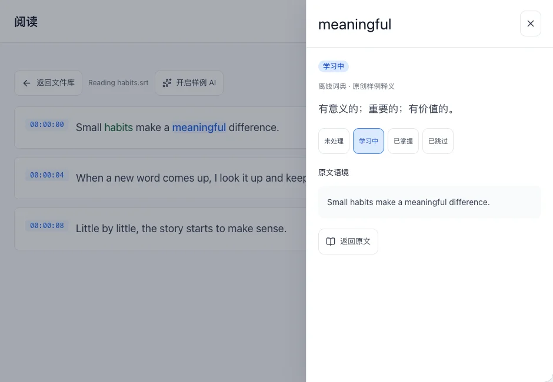
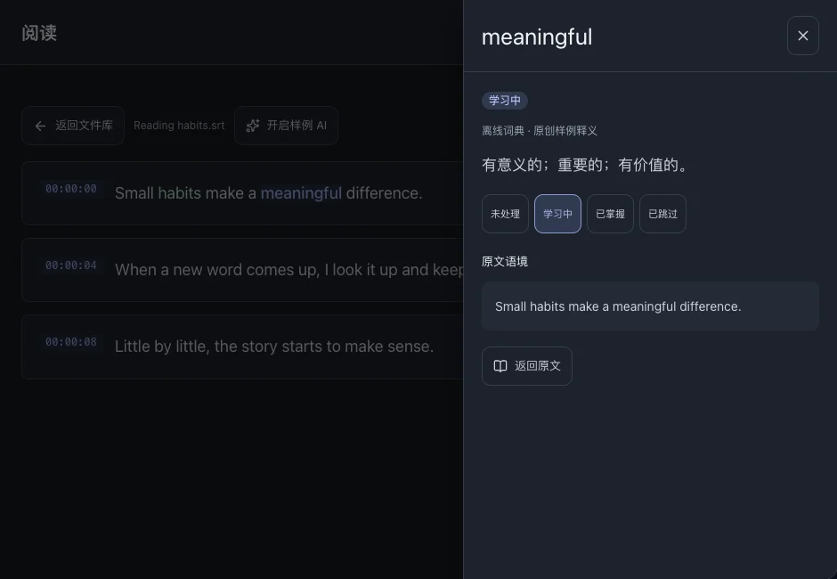

阅读与查词
边读字幕，边在原句中查词。释义在抽屉中打开，关闭即可继续阅读。
本页目录
点击查词
- 打开文件，点击字幕行中的单词。
- 查看释义与原句。桌面端从右侧打开抽屉，手机从底部打开。
- 关闭抽屉继续阅读。若没有释义，请检查学习语言与词典设置。



相关操作词典管理
标记学习状态
想复习的词标为“学习中”，已经理解的词标为“已掌握”，不准备学习的词可忽略；“未处理”表示尚未标注。
- 打开单词详情，修改学习状态。
- 修改会同步反映在“词汇”和“统计”中。
理解语境与词组
AI 为可选功能。本地 Gemma 需单独下载模型；云端提供方需配置服务，并会接收所选文本。
- 在“设置”中配置并开启 AI。
- 从文件或阅读页主动启动分析，等待结果。
- 点击识别出的词组查看含义与原句。结果会随语言、模型和内容不同。